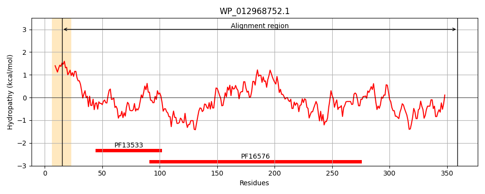
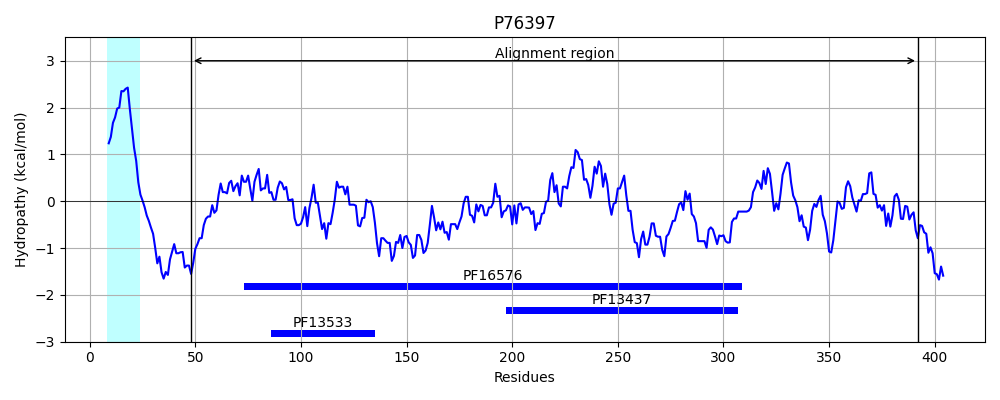
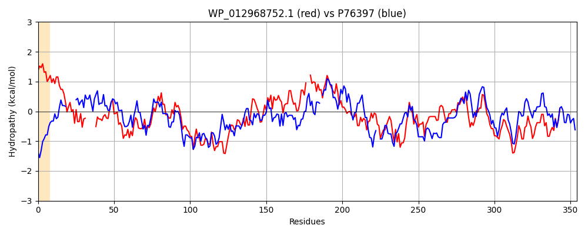

Hit Accession: P76397
Hit TCID: 8.A.1.6.2
Hit Description: gnl|BL_ORD_ID|11464 gnl|TC-DB|P76397|8.A.1.6.2 Multidrug resistance protein mdtA - Escherichia coli (strain K12).
Mach Len: 354
e:0.000000
Query TMS Count : 1
Hit TMS Count: 1
TMS-Overlap Score: 0.000000
Predicted Substrates:None
BLAST Alignment:
Score: 479 , Bit scores: 189 bits, E-value: 2.1e-56, Alignment length: 354, Percentage identity: 34
Query: 15 AGGALTATAAPAVPVRVATVELAPHAEERAIP------GRVEAIRAVDIRARTEGVIVQRHFQDGQYVTEGDLLFTLDDAQPRAALALAQAELKSAEASLRQSQQLLTRYERLINNHSISRNDVDTARMQRDVAAAAVQQAKARVEAQQIVLSYTRIAAPVTGRVGHSAFHVGTLIN--PSSGVLVDIVQLDPVRVSFALDEAAFFS-KSGQHADIHALKQAWLAQIDVDGKRRDGVLTSIDNRIDARTGSVAVRAEFANPQHRLLPGGSVTILFRPQELQSRVMIPAAAVQQDPQGFFSWVLKPDHTAGQRRLTLAGQQGQQFAVEKGLQAGEQVITDGAQRLREGAAVQVLK 359
AGG + P PV+ AT A E+A+P G + A V +R+R +G ++ HFQ+GQ V GDLL +D +Q + ALA AQ +L +A+L +++ L RY++L + +SR ++D + ++ +A V + Q+ L ++RI APV GRVG VG I+ ++G++V I Q P+ + F L E+ + Q A + +AW K +G L S+DN+IDA TG++ V+A F N L P V Q+ V+IP AA+Q +G F WVL ++ + +T Q Q+ + G+ AG++V+TDG RL EGA V+V++
Sbjct: 48 AGGRRGMRSGPLAPVQAAT------AVEQAVPRYLTGLGTITAANTVTVRSRVDGQLIALHFQEGQQVKAGDLLAEIDPSQFKVALAQAQGQLAKDKATLANARRDLARYQQLAKTNLVSRQELDAQQALVSETEGTIKADEASVASAQLQLDWSRITAPVDGRVGLKQVDVGNQISSGDTTGIVV-ITQTHPIDLVFTLPESDIATVVQAQKAGKPLVVEAW--DRTNSKKLSEGTLLSLDNQIDATTGTIKVKARFNNQDDALFPNQFVNARMLVDTEQNAVVIPTAALQMGNEGHFVWVLNSENKVSKHLVTPGIQDSQKVVIRAGISAGDRVVTDGIDRLTEGAKVEVVE 392 | Protein Hydropathy Plots: |
|---|
|  |  |
Pairwise Alignment-Hydropathy Plot:
|
|---|
|  |